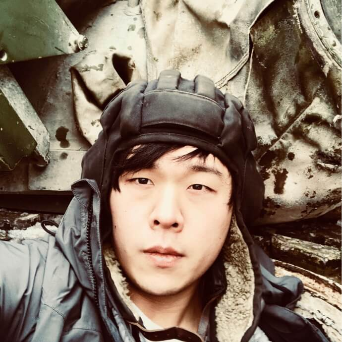

тaк...
Chernobyl Photo Log
Part travelogue, part memoir, and part visual poem, тaк... showcases a young man's journey through the Chernobyl exclusion zone in the winter of 2018. This book is a an appreciation of the beauty left behind in the wake of the biggest nuclear disaster in human history.
hide
author / hyun seo

I was born in South Korea, but my heart is probably
somewhere in Eastern Europe. My love affair with the
region started back in high school when I took Russian
for my language requirement. After I played the video
game S.T.A.L.K.E.R.: Shadow of Chernobyl, I was
fascinated by the nuclear disaster’s tragic history and
had to learn as much as I could about it. I decided
I was going to see the zone for myself one day.
My other interests include all things tech—I hold
patents in artificial intelligence, robotics, cyber-security,
and quantum computing. More importantly, I hacked
through my first firewall in middle school so I could
mess around on Myspace and YouTube. If any of my
old teachers are reading this, I’m sorry. A little.
I live in Austin and work at IBM Research. I’ve hosted
popular workshops at SXSW and have been interviewed
by publications such as The Daily Dot and USA Today.